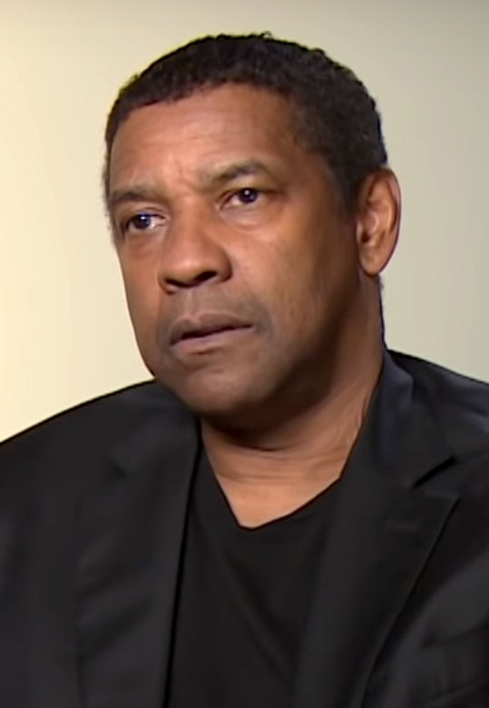
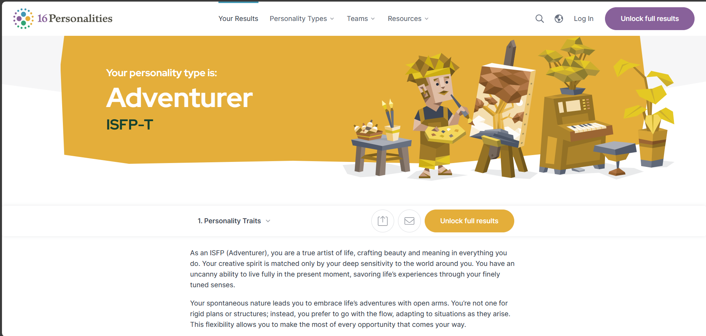
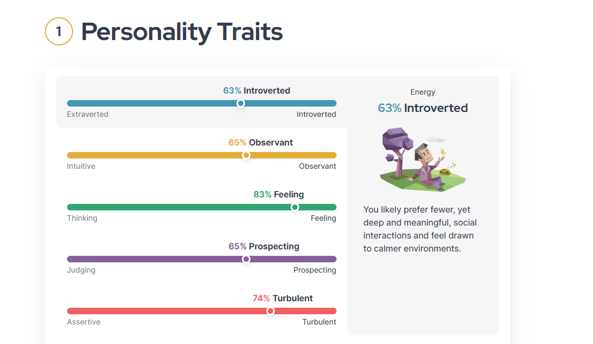
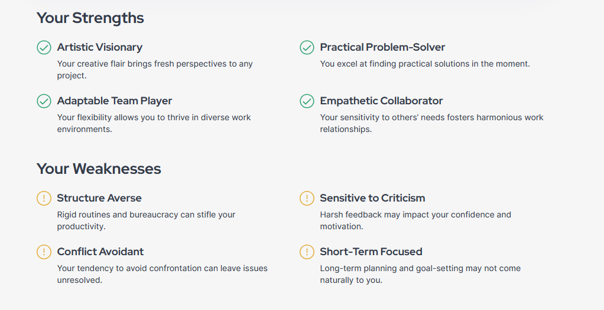

My Strongest Trait
My strongest trait is resilience. I have the ability to bounce back quickly from setbacks, stress, and sudden changes. For example, if I fail to achieve a goal, I quickly come up with a new plan to surpass the next challenge. This trait helps me remain productive, maintain a positive outlook, and face obstacles head-on. It's greatly impacted my academic life, allowing me to push through tough assignments with determination. Walking is one of my favorite hobbies because it helps me decompress and think clearly, especially when I feel overwhelmed by schoolwork.
The Icon
My hero is Denzel Washington. His confidence, powerful speeches, and ability to inspire others make him a role model for me. Denzel's strong presence and impactful words have left a lasting influence on me, pushing me to embrace self-confidence and perseverance in everything I do. One of his quotes that really resonates with me is: "You pray for rain, you gotta deal with the mud too. That's a part of it." His ability to remain grounded and focused, even in the face of challenges, is something I truly admire.
Personality Test Results
I completed the 16Personalities test on their website, which uses the Myers-Briggs Type Indicator (MBTI) to analyze personality traits. After completing the test, I received a profile that provides insights into my strengths and tendencies.
  I find that personality tests can provide useful insights, but they are not always entirely accurate. While I do see elements of myself reflected in the results, they don't fully capture the complexity of who I am. For instance, while I can be introverted and enjoy my alone time, I also love engaging with new people and experiences.